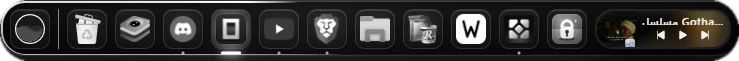

موجة تكبير حقيقية
تكبر الأيقونة تحت المؤشر وتتناقص جاراتها بمنحنى ناعم — نفس منطق الدوك الأصلي، بلا اهتزاز.
Seelen UI 2.8 · Windows 10 / 11
هوية أحادية اللون بالكامل: دوك بموجة تكبير، شريط علوي، قائمة ابدأ، Alt+Tab ومساحات عمل، إشعارات، و12 خلفية 4K — كلها من مصدر واحد.
ملف واحد · بلا تثبيت · يفتح مباشرة في Seelen
جديد ·لا إعدادات، لا Terminal — ملف واحد فقط.
اضغط «تحميل الثيم» فيُجلب أحدث إصدار باسم aurora-dock.slu مباشرة.
افتح الملف — وإن سألك Windows عن التطبيق فاختر Seelen UI. أو اسحبه على نافذة Seelen مباشرة.
من إعدادات Seelen: Themes → Aurora Dock. وإن لم يظهر، أعد تشغيل Seelen مرة واحدة.
مونوكروم صارم، وزجاج يتنفّس — بلا زخرفة زائدة.
تكبر الأيقونة تحت المؤشر وتتناقص جاراتها بمنحنى ناعم — نفس منطق الدوك الأصلي، بلا اهتزاز.
خيط ضوء رفيع يمرّ على حافة الزجاج كل 14 ثانية، بسرعة وشدّة قابلتين للضبط.
يتبع prefers-color-scheme: زجاج أسود بالليل، أبيض بالحبر بالنهار.
البلاطة تحت المؤشر تُضاء من الأسفل، وجاراتها تأخذ هالة خفيفة — لا وميض.
أرقام جدولية وplaintext للنصوص المختلطة، مع محاذاة RTL كاملة.
متغيّر واحد --ads-fx يخفض الضباب على البطارية، ويوقف الحركات عند الطلب.
سكربت مرافق يخفي شريط المهام بهدوء ويترك الحافتين للدوك والشريط العلوي — يظهر عند لمس الحافة، ويعود بخطوة.
نفس الأشكال والموجة، بلا ضباب وبحركة هادئة: أمر واحد يعيدك للإعدادات السابقة عند الحاجة.
الدوك والشريط العلوي يتقاسمان نصف قطر واحد وتوهّجاً أرضياً خفيفاً، فيبدوان قطعة واحدة.
لقطات حقيقية من الشاشة — لا نماذج، لا تركيب.

«دراسات ضوء»: شكل واحد على سطح مطفي، بلا أبيض محروق ولا أسود كامل.
كل الخلفيات داخل حزمة واحدة، مع سكربت تطبيق لكل الشاشات.
تحميل الحزمة (zip)آخر ثلاثة إصدارات، مسحوبة من GitHub مباشرة.
قصيرة وواضحة، مثل الثيم.
ملف واحد. ثلاث خطوات. ثيم كامل.
افتح الملف بعد اكتمال التنزيل (وإن سألك Windows فاختر Seelen UI)، أو اسحبه على نافذة Seelen — سيتفعّل تلقائياً.